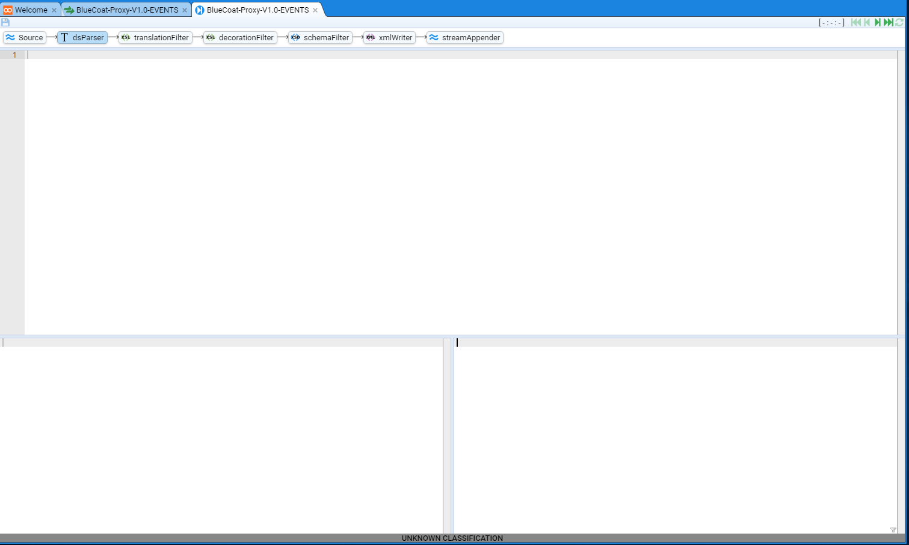
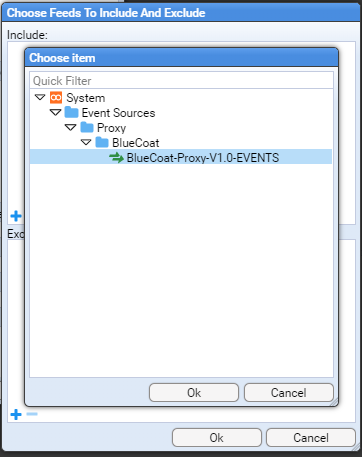
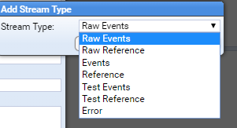

Stroom HOWTO - EventProcessing
This HOWTO is provided to assist users in setting up Stroom to process inbound raw event logs and transform them into the Stroom Event Logging XML Schema.
Assumptions
The following assumptions are used in this document.
- the user successfully deployed Stroom
- the following Stroom content packages have been installed
- Template Pipelines
- XML Schemas
Introduction
This HOWTO will demonstrate the process by which an Event Processing pipeline for a given Event Source is developed and deployed.
The sample event source used will be based on BlueCoat Proxy logs. An extract of BlueCoat logs were sourced from http://log-sharing.dreamhosters.com (a Public Security Log Sharing Site) but modified to add sample user attribution.
Template pipelines are being used to simplify the establishment of this processing pipeline.
The sample BlueCoat Proxy log will be transformed into an intermediate simple XML key value pair structure, then into the Stroom Event Logging XML Schema (external link) format.
Event Source
As mentioned, we will use BlueCoat Proxy logs as a sample event source. Although BlueCoat logs can be customised, the default is to use the W2C Extended Log File Format (ELF). Our sample data set looks like
#Software: SGOS 3.2.4.28
#Version: 1.0
#Date: 2005-04-27 20:57:09
#Fields: date time time-taken c-ip sc-status s-action sc-bytes cs-bytes cs-method cs-uri-scheme cs-host cs-uri-path cs-uri-query cs-username s-hierarchy s-supplier-name rs(Content-Type) cs(User-Agent) sc-filter-result sc-filter-category x-virus-id s-ip s-sitename x-virus-details x-icap-error-code x-icap-error-details
2005-05-04 17:16:12 1 45.110.2.82 200 TCP_HIT 941 729 GET http www.inmobus.com /wcm/assets/images/imagefileicon.gif - george DIRECT 38.112.92.20 image/gif "Mozilla/4.0 (compatible; MSIE 6.0; Windows NT 5.1; SV1; .NET CLR 1.1.4322)" PROXIED none - 192.16.170.42 SG-HTTP-Service - none -
2005-05-04 17:16:12 2 45.110.2.82 200 TCP_HIT 941 729 GET http www.inmobus.com /wcm/assets/images/imagefileicon.gif - george DIRECT 38.112.92.20 image/gif "Mozilla/4.0 (compatible; MSIE 6.0; Windows NT 5.1; SV1; .NET CLR 1.1.4322)" PROXIED none - 192.16.170.42 SG-HTTP-Service - none -
...
A copy of this sample data source can be found here. Later in this HOWTO, one will be required to upload this file. If you save this file now, ensure the file is saved as a text document with ANSI encoding.
Establish the Processing Pipeline
We will create the components that make up the processing pipeline for transforming these raw logs into the Stroom Event Logging XML Schema. They will be placed a folder appropriately named BlueCoat in the path System/Event Sources/Proxy. See Folder Creation for details on creating such a folder.
There will be four components
- the Event Feed to group the BlueCoat log files
- the Text Converter to convert the BlueCoat raw logs files into simple XML
- the XSLT Translation to translate the simple XML formed by the Text Converter into the Stroom Event Logging XML form, and
- the Processing pipeline which manages how the processing is performed.
All components will have the same Name BlueCoat-Proxy-V1.0-EVENTS. It should be noted that the default Stroom FeedName pattern will not accept this name. One needs to modify the stroom.feedNamePattern stroom property to change the default pattern to ^[a-zA-Z0-9_-\.]{3,}$. See the HOWTO on System Properties docment to see how to make this change.
Create the Event Feed
We first select (with a left click) the System/Event Sources/Proxy/BlueCoat folder in the Explorer tab then right click to bring up the New Item selection sub-menu.

As we are creating an Event Feed, select the  item to have the
item to have the New Feed configuration window into which we enter BlueCoat-Proxy-V1.0-EVENTS into the Name: entry box

and press  to see the new Event Feed tab
to see the new Event Feed tab

and it's corresponding reference in the Explorer display.
The configuration items for a Event Feed are
- Description - a description of the feed
- Classification - the classification or sensitivity of the Event Feed data
- Reference Feed Flag - to indicate if this is a
Reference Feedor not - Feed Status - which indicates if we accept data, reject it or silently drop it
- Stream Type - to indicate if the
Feedcontains raw log data or reference data - Data Encoding - the character encoding of the data being sent to the
Feed - Context Encoding - the character encoding of context data associated with this
Feed - Retention Period - the amount of time to retain the Event data
In our example, we will set the above to
- Description - BlueCoat Proxy log data sent in W2C Extended Log File Format (ELFF)
- Classification - We will leave this blank
- Reference Feed Flag - We leave the check-box unchecked as this is not a Reference Feed
- Feed Status - We set to Receive
- Stream Type - We set to Raw Events as we will be sending batches (streams) of raw event logs
- Data Encoding - We leave at the default of UTF-8 as this is the proposed character encoding
- Context Encoding - We leave at the default of UTF-8 as there are no Context Events for this Feed
- Retention Period - We leave at Forever was we do not want to delete any collected BlueCoat event data.

One should note that the Feed tab as been marked as having unsaved changes. This is indicated by the asterisk
character * between the Feed icon  and the name of the feed BlueCoat-Proxy-V1.0-EVENTS.
We can save the changes to our feed by pressing the Save icon
and the name of the feed BlueCoat-Proxy-V1.0-EVENTS.
We can save the changes to our feed by pressing the Save icon  in
the top left of the BlueCoat-Proxy-V1.0-EVENTS tab. At this point one should notice two things, the first is that the asterisk
has disappeared from the
in
the top left of the BlueCoat-Proxy-V1.0-EVENTS tab. At this point one should notice two things, the first is that the asterisk
has disappeared from the Feed tab and the the second is that the Save icon  is now ghosted -
is now ghosted -  .
.

Create the Text Converter
We now create the Text Converter for this Feed in a similar fashion to the Event Feed.
We first select (with a left click) the System/Event Sources/Proxy/BlueCoat folder in the Explorer tab then right click to bring up the New Item selection sub-menu. As we are creating a Text Converter, select the  item to have the
item to have the New Text Converter configuration window.
Enter BlueCoat-Proxy-V1.0-EVENTS into the Name: entry box and press the  which results in the creation of the Text Converter tab
which results in the creation of the Text Converter tab

and it's corresponding reference in the Explorer display.
We set the configuration for this Text Converter to be
- Description - Simple XML transform for BlueCoat Proxy log data sent in W2C Extended Log File Format (ELFF)
- Converter Type - We set to Data Splitter was we will be using the Stroom Data Splitter facility to convert the raw log data into simple XML.
Again, press the Save icon  to save the configuration items.
to save the configuration items.
Create the XSLT Translation
We now create the XSLT translation for this Feed in a similar fashion to the Event Feed or Text Converter.
We first select (with a left click) the System/Event Sources/Proxy/BlueCoat folder in the Explorer tab then right click to bring up the New Item selection sub-menu. As we are creating a XSLT Translation, select the  item to have the
item to have the New XSLT configuration window.
Enter BlueCoat-Proxy-V1.0-EVENTS into the Name: entry box and press the  which results in the creation of the XSLT Translation tab
which results in the creation of the XSLT Translation tab

and it's corresponding reference in the Explorer display.
We set the configuration for this XSLT Translation to be
- Description - Transform simple XML of BlueCoat Proxy log data into Stroom Event Logging XML form
Again, press the Save icon  to save the configuration items.
to save the configuration items.
Create the Pipeline
We now create the Pipeline for this Feed in a similar fashion to the Event Feed, Text Converter or XSLT Translation.
We first select (with a left click) the System/Event Sources/Proxy/BlueCoat folder in the Explorer tab then right click to bring up the New Item selection sub-menu. As we are creating a Pipeline, select the  item to have the
item to have the New Pipeline configuration window.
Enter BlueCoat-Proxy-V1.0-EVENTS into the Name: entry box and press the  which results in the creation of the Pipeline tab
which results in the creation of the Pipeline tab

and it's corresponding reference in the Explorer display.
We set the configuration for this Pipeline to be
- Description - Processing of XML of BlueCoat Proxy log data into Stroom Event Logging XML
- Type - We leave as Event Data as this is an Event Data pipeline
Configure Pipeline Structure
We now need to configure the Structure of this Pipeline.
We do this by selecting the Structure hyper-link of the *BlueCoat-Proxy-V1.0-EVENTS Pipeline tab.
At this we see the Pipeline Structure configuration tab

As noted in the Assumptions at the start, we have loaded the Template Pipeline content pack, so that we can Inherit a pipeline structure from this content pack and configure it to support this specific feed.
We find a template by selecting the Inherit From: entry box labeled  to reveal a Choose Item configuration item window.
to reveal a Choose Item configuration item window.

Select the Template Pipelines folder by pressing the  icon to the left of the folder to reveal the choice of available templates.
icon to the left of the folder to reveal the choice of available templates.

For our BlueCoat feed we will select the Event Data (Text) template. This is done by moving the cursor to the relevant line and select via a left click

then pressing  to see the inherited pipeline structure
to see the inherited pipeline structure

Configure Pipeline Elements
For the purpose of this HOWTO, we are only interested in two of the eleven (11) elements in this pipeline
- the Text Converter labeled dsParser
- the XSLT Translation labeled translationFilter
We need to assign our BlueCoat-Proxy-V1.0-EVENTS Text Converter and XSLT Translation to these elements respectively.
Text Converter Configuration
We do this by first selecting (left click) the dsParser element at which we see the Property sub-window displayed

We then select (left click) the textConverter Property Name

then press the Edit Property button  . At this, the
. At this, the Edit Property configuration window is displayed.

We select the Value: entry box labeled  to reveal a Choose Item configuration item window.
to reveal a Choose Item configuration item window.

We traverse the folder structure until we can select the BlueCoat-Proxy-V1.0-EVENTS Text Converter as per

and then press the  to see that the Property Value: has been selected.
to see that the Property Value: has been selected.

and pressing the  button of the
button of the Edit Property configuration window results in the pipelines dsParser property being set.

XSLT Translation Configuration
We do this by first selecting (left click) the translationFilter element at which we see the Property sub-window displayed

We then select (left click) the xslt Property Name

and following the same steps as for the Text Converter property selection, we assign the BlueCoat-Proxy-V1.0-EVENTS XSLT Translation to the xslt property.

At this point, we save these changes by pressing the Save icon  .
.
Authoring the Translation
We are now ready to author the translation. Close all tabs except for the Welcome and BlueCoat-Proxy-V1.0-EVENTS Feed tabs.
On the BlueCoat-Proxy-V1.0-EVENTS Feed tab, select the Data hyper-link to be presented with the Data pane of our tab.

Although we can post our test data set to this feed, we will manually upload it via the Data pane. To do this we press the Upload button  in the top Data pane to display the
in the top Data pane to display the Upload configuration window

In a Production situation, where we would post log files to Stroom, we would include certain HTTP Header variables that, as we shall see, will be used as part of the translation. These header variables typically provide situational awareness of the source system sending the events.
For our purposes we set the following HTTP Header variables
Environment:Development
LogFileName:sampleBluecoat.log
MyHost:"somenode.strmdev00.org"
MyIPaddress:"192.168.2.220 192.168.122.1"
MyMeta:"FQDN:somenode.strmdev00.org\nipaddress:192.168.2.220\nipaddress_eth0:192.168.2.220\nipaddress_lo:127.0.0.1\nipaddress_virbr0:192.168.122.1\n"
MyNameServer:"gateway.strmdev00.org."
MyTZ:+1000
Shar256:056f0d196ffb4bc6c5f3898962f1708886bb48e2f20a81fb93f561f4d16cb2aa
System:Site http://log-sharing.dreamhosters.com/ Bluecoat Logs
Version:V1.0
These are set by entering them into the Meta Data: entry box.

Having done this we select a Stream Type: of Raw Events
We leave the Effective: entry box empty as this stream of raw event logs does not have an Effective Date (only Reference Feeds set this).
And we choose our file sampleBluecoat.log, by clicking on the Browse button in the File: entry box, which brings up the brower's standard file upload selection window. Having selected our file, we see

On pressing  and
and Alert pop-up window is presented indicating the file was uploaded

Again press  to show that the data has been uploaded as a Stream into the BlueCoat-Proxy-V1.0-EVENTS Event Feed.
to show that the data has been uploaded as a Stream into the BlueCoat-Proxy-V1.0-EVENTS Event Feed.

The top pane holds a table of the latest streams that pertain to the feed. We see the one item which is the stream we uploaded. If we select it, we see that a stream summary is also displayed in the centre pane (which shows details of the specific selected feed and associated streams. We also see that the bottom pane displays the data associated with the selected item. In this case, the first lines of content from the BlueCoat sample log file.

If we were to select the Meta hyper-link of the lower pane, one would see the metadata Stroom records for this Stream of data.

You should see all the HTTP variables we set as part of the Upload step as well as some that Stroom has automatically set.
We now switch back to the Data hyper-link before we start to develop the actual translation.
Stepping the Pipeline
We will now author the two translation components of the pipeline, the data splitter that will transform our lines of BlueCoat data into a simple xml format and then the XSLT translation that will take this simple xml format and translate it into appropriate Stroom Event Logging XML form.
We start by ensuring our Raw Events Data stream is selected and we press the Enter Stepping Mode  button on the lower right hand side of the bottom
button on the lower right hand side of the bottom Stream Data pane.
You will be prompted to select a pipeline to step with. Choose the BlueCoat-Proxy-V1.0-EVENTS pipeline

then press  .
.
Stepping the Pipeline - Source
You will be presented with the Source element of the pipeline that shows our selected stream's raw data.

We see two panes here.
The top pane displays the Pipeline structure with Source selected (we could refer to this as the stepping pane) and it also displays a step indicator (three colon separated numbers enclosed in square brackets initially the numbers are dashes i.e. [-:-:-] as we have yet to step) and a set of green Stepping Actions. The step indicator and Stepping Actions allows one the step through a log file, selecting data event by event (an event is typically a line, but some events can be multi-line).
The bottom pane displays the first page (up to 100 lines) of data along with a set of blue Data Selection Actions. The Data Selection Actions are used to step through the source data 100 lines at a time. When multiple source log files have been aggregated into a single stream, two Data Selection Actions control buttons will be offered. The right hand one will allow a user to step though the source data as before, but the left hand set of control buttons allows one to step between files from the aggregated event log files.
Stepping the Pipeline - dsParser
We now select the dsParser pipeline element that results in the window below

This window is made up of four panes.
The top pane remains the same - a display of the pipeline structure and the step indicator and green Stepping Actions.
The next pane down is the editing pane for the Text Converter. This pane is used to edit the text converter that converts our line based BlueCoat Proxy logs into a XML format. We make use of the Stroom Data Splitter facility to perform this transformation. See here for complete details on the data splitter.
The lower two panes are the input and output displays for the text converter.
The authoring of this data splitter translation is outside the scope of this HOWTO. It is recommended that one reads up on the Data Splitter and review the various samples found in the Stroom Context packs published, or the Pull Requests of https://github.com/gchq/stroom-content.
For the purpose of this HOWTO, the Datasplitter appears below. The author believes the comments should support the understanding of the transformation.
<?xml version="1.0" encoding="UTF-8"?>
<dataSplitter bufferSize="5000000" xmlns="data-splitter:3" xmlns:xsi="http://www.w3.org/2001/XMLSchema-instance" xsi:schemaLocation="data-splitter:3 file://data-splitter-v3.0.xsd" version="3.0" ignoreErrors="true">
<!--
This datasplitter gains the Software and and Proxy version strings along with the log field names from the comments section of the log file.
That is from the lines ...
#Software: SGOS 3.2.4.28
#Version: 1.0
#Date: 2005-04-27 20:57:09
#Fields: date time time-taken c-ip sc-status s-action sc-bytes cs-bytes cs-method ... x-icap-error-code x-icap-error-details
We use the Field values as the header for the subsequent log fields
-->
<!-- Match the software comment line and save it in _bc_software -->
<regex id="software" pattern="^#Software: (.+) ?\n*">
<data name="_bc_software" value="$1" />
</regex>
<!-- Match the version comment line and save it in _bc_version -->
<regex id="version" pattern="^#Version: (.+) ?\n*">
<data name="_bc_version" value="$1" />
</regex>
<!-- Match against a Fields: header comment and save all the field names in a headings -->
<regex id="heading" pattern="^#Fields: (.+) ?\n*">
<group value="$1">
<regex pattern="^(\S+) ?\n*">
<var id="headings" />
</regex>
</group>
</regex>
<!-- Skip all other comment lines -->
<regex pattern="^#.+\n*">
<var id="ignorea" />
</regex>
<!-- We now match all other lines, applying the headings captured at the start of the file to each field value -->
<regex id="body" pattern="^[^#].+\n*">
<group>
<regex pattern="^"([^"]*)" ?\n*">
<data name="$headings$1" value="$1" />
</regex>
<regex pattern="^([^ ]+) *\n*">
<data name="$headings$1" value="$1" />
</regex>
</group>
</regex>
<!-- -->
</dataSplitter>
It should be entered into the Text Converter's editing pane as per

A copy of this DataSplitter can be found here.
As mentioned earlier, to step the translation, one uses the green Stepping Actions.
The actions are
 - progress the transformation to the first line of the translation input
- progress the transformation to the first line of the translation input - progress the transformation one step backward
- progress the transformation one step backward - progress the transformation one step forward
- progress the transformation one step forward - progress the transformation to the end of the translation input
- progress the transformation to the end of the translation input - refresh the transformation based on the current translation input
- refresh the transformation based on the current translation input
So, if one was to press the  stepping action we would be presented with
stepping action we would be presented with

We see that the input pane has the first line of input from our sample file and the output pane has an XML record structure where we have defined a data element with the name attribute of bc_software and it's value attribute of SGOS 3.2.4.28. The definition of the record structure can be found in the System/XML Schemas/records folder.
This is the result of the code in our editor
<!-- Match the software comment line and save it in _bc_software -->
<regex id="software" pattern="^#Software: (.+) ?\n*">
<data name="_bc_software" value="$1" />
</regex>
If one presses the  stepping action again, we see that we have moved to the second line of the input file with the resultant output of a data element with the name attribute of bc_version and it's value attribute of 1.0.
stepping action again, we see that we have moved to the second line of the input file with the resultant output of a data element with the name attribute of bc_version and it's value attribute of 1.0.

Stepping forward once more causes the translation to ignore the Date comment line, define a Data Splitter $headings variable from the Fields comment line and transform the first line of actual event data.

We see that a <record> element has been formed with multiple key value pair <data> elements where the name attribute is the key and the value attribute the value. You will note that the keys have been taken from the Fields comment line which where placed in the $headings variable.
You should also take note that the stepping indicator has been incrementing the last number, so at this point it is displaying
[1:1:3]
The general form of this indicator is
'[' streamId ':' subStreamId ':' recordNo ']'
where
- streamId - is the stream ID and won't change when stepping through the selected stream,
- subStreamId - is the sub stream ID. When Stroom aggregates multiple event sources for a feed, it aggregates multiple input files and this is, in effect, the file number.
- recordNo - is the record number within the sub stream.
One can double click on either the subStreamId or recordNo entry and enter a new value. This allows you to jump around a stream rather than just relying on first, previous, next and last movements.
Hovering the mouse over the stepping indicator will change the cursor to a hand pointer. Selecting (by a left click) the recordNo will allow you to edit it's value (and the other values for that matter). You will see the display change from
to

If we change the record number from 3 to 12 then either press Enter or press the  action we see
action we see

and note that a new record has been processed in the input and output panes. Further, if one steps back to the Source element of the pipeline to view the raw source file, we see that the highlighted current line is the 12th line of processed data. It is the 10th actual bluecoat event, but remember the #Software, #Version lines are considered as processed data (2+10 = 12). Also noted that the #Date and #Fields lines are not considered processed data, and hence do not contribute to the recordNo value.

If we select the dsParser pipeline element then press the  action we see the
action we see the recordNo jump to 31 which is the last processed line of our sample log file.

Stepping the Pipeline - translationFilter
We now select the translationFilter pipeline element that results in

As for the dsParser, this window is made up of four panes.
The top pane remains the same - a display of the pipeline structure and the step indicator and green Stepping Actions.
The next pane down is the editing pane for the Translation Filter. This pane is used to edit an xslt translation that converts our simple key value pair <records> XML structure into another XML form.
The lower two panes are the input and output displays for the xslt translation. You will note that the input and output displays are identical for a null xslt translation is effectively a direct copy.
In this HOWTO we will transform the <records> XML structure into the GCHQ Stroom Event Logging XML Schema form which is documented here.
The authoring of this xslt translation is outside the scope of this HOWTO, as is the use of the Stroom XML Schema. It is recommended that one reads up on XSLT Conversion and the Stroom Event Logging XML Schema and review the various samples found in the Stroom Context packs published, or the Pull Requests of https://github.com/gchq/stroom-content.
We will build the translation in steps. We enter an initial portion of our xslt transformation that just consumes the Software and Version key values and converts the date and time values (which are in UTC) into the EventTime/TimeCreated element. This code segment is
<?xml version="1.0" encoding="UTF-8" ?>
<xsl:stylesheet xpath-default-namespace="records:2" xmlns="event-logging:3" xmlns:stroom="stroom"
xmlns:xsl="http://www.w3.org/1999/XSL/Transform" xmlns:xsi="http://www.w3.org/2001/XMLSchema-instance" xmlns:xs="http://www.w3.org/2001/XMLSchema" version="3.0">
<!-- Bluecoat Proxy logs in W2C Extended Log File Format (ELF) -->
<!-- Ingest the record key value pair elements -->
<xsl:template match="records">
<Events xsi:schemaLocation="event-logging:3 file://event-logging-v3.2.4.xsd" Version="3.2.4">
<xsl:apply-templates />
</Events>
</xsl:template>
<!-- Main record template for single event -->
<xsl:template match="record">
<xsl:choose>
<!-- Store the Software and Version information of the Bluecoat log file for use in the Event Source elements which are processed later -->
<xsl:when test="data[@name='_bc_software']">
<xsl:value-of select="stroom:put('_bc_software', data[@name='_bc_software']/@value)" />
</xsl:when>
<xsl:when test="data[@name='_bc_version']">
<xsl:value-of select="stroom:put('_bc_version', data[@name='_bc_version']/@value)" />
</xsl:when>
<!-- Process the event logs -->
<xsl:otherwise>
<Event>
<xsl:call-template name="event_time" />
</Event>
</xsl:otherwise>
</xsl:choose>
</xsl:template>
<!-- Time -->
<xsl:template name="event_time">
<EventTime>
<TimeCreated>
<xsl:value-of select="concat(data[@name = 'date']/@value,'T',data[@name='time']/@value,'.000Z')" />
</TimeCreated>
</EventTime>
</xsl:template>
</xsl:stylesheet>
After entering this translation and pressing the  action shows the display
action shows the display

Note that this is the 31st record, so if we were to jump to the first record using the  action, we see that the input and output change appropriately.
action, we see that the input and output change appropriately.

You will note that there is no Event element in the output pane as the record template in our xslt translation above is only storing the input's key value (_bc_software's value).
Further note that the BlueCoat_Proxy-V1.0-EVENTS tab has a star in front of it and also the Save icon  is highlighted. This indicates that a component of the pipeline needs to be saved. In this case, the XSLT translation.
is highlighted. This indicates that a component of the pipeline needs to be saved. In this case, the XSLT translation.

By pressing the Save icon, you will save the XSLT translation as it currently stands and both the star will be removed from the tab and the Save icon will no longer be highlighted.

We next extend out translation by authoring a event_source template to form an appropriate Stroom Event Logging EventSource element structure. Thus our translation now is
<?xml version="1.0" encoding="UTF-8" ?>
<xsl:stylesheet xpath-default-namespace="records:2" xmlns="event-logging:3" xmlns:stroom="stroom"
xmlns:xsl="http://www.w3.org/1999/XSL/Transform" xmlns:xsi="http://www.w3.org/2001/XMLSchema-instance" xmlns:xs="http://www.w3.org/2001/XMLSchema" version="3.0">
<!-- Bluecoat Proxy logs in W2C Extended Log File Format (ELF) -->
<!-- Ingest the record key value pair elements -->
<xsl:template match="records">
<Events xsi:schemaLocation="event-logging:3 file://event-logging-v3.2.4.xsd" Version="3.2.4">
<xsl:apply-templates />
</Events>
</xsl:template>
<!-- Main record template for single event -->
<xsl:template match="record">
<xsl:choose>
<!-- Store the Software and Version information of the Bluecoat log file for use in the Event Source elements which are processed later -->
<xsl:when test="data[@name='_bc_software']">
<xsl:value-of select="stroom:put('_bc_software', data[@name='_bc_software']/@value)" />
</xsl:when>
<xsl:when test="data[@name='_bc_version']">
<xsl:value-of select="stroom:put('_bc_version', data[@name='_bc_version']/@value)" />
</xsl:when>
<!-- Process the event logs -->
<xsl:otherwise>
<Event>
<xsl:call-template name="event_time" />
<xsl:call-template name="event_source" />
</Event>
</xsl:otherwise>
</xsl:choose>
</xsl:template>
<!-- Time -->
<xsl:template name="event_time">
<EventTime>
<TimeCreated>
<xsl:value-of select="concat(data[@name = 'date']/@value,'T',data[@name='time']/@value,'.000Z')" />
</TimeCreated>
</EventTime>
</xsl:template>
<!-- Template for event source-->
<xsl:template name="event_source">
<!--
We extract some situational awareness information that the posting script includes when posting the event data
-->
<xsl:variable name="_mymeta" select="translate(stroom:meta('MyMeta'),'"', '')" />
<!-- Form the EventSource node -->
<EventSource>
<System>
<Name>
<xsl:value-of select="stroom:meta('System')" />
</Name>
<Environment>
<xsl:value-of select="stroom:meta('Environment')" />
</Environment>
</System>
<Generator>
<xsl:variable name="gen">
<xsl:if test="stroom:get('_bc_software')">
<xsl:value-of select="concat(' Software: ', stroom:get('_bc_software'))" />
</xsl:if>
<xsl:if test="stroom:get('_bc_version')">
<xsl:value-of select="concat(' Version: ', stroom:get('_bc_version'))" />
</xsl:if>
</xsl:variable>
<xsl:value-of select="concat('Bluecoat', $gen)" />
</Generator>
<xsl:if test="data[@name='s-computername'] or data[@name='s-ip']">
<Device>
<xsl:if test="data[@name='s-computername']">
<Name>
<xsl:value-of select="data[@name='s-computername']/@value" />
</Name>
</xsl:if>
<xsl:if test="data[@name='s-ip']">
<IPAddress>
<xsl:value-of select=" data[@name='s-ip']/@value" />
</IPAddress>
</xsl:if>
<xsl:if test="data[@name='s-sitename']">
<Data Name="ServiceType" Value="{data[@name='s-sitename']/@value}" />
</xsl:if>
</Device>
</xsl:if>
<!-- -->
<Client>
<xsl:if test="data[@name='c-ip']/@value != '-'">
<IPAddress>
<xsl:value-of select="data[@name='c-ip']/@value" />
</IPAddress>
</xsl:if>
<!-- Remote Port Number -->
<xsl:if test="data[@name='c-port']/@value !='-'">
<Port>
<xsl:value-of select="data[@name='c-port']/@value" />
</Port>
</xsl:if>
</Client>
<!-- -->
<Server>
<HostName>
<xsl:value-of select="data[@name='cs-host']/@value" />
</HostName>
</Server>
<!-- -->
<xsl:variable name="user">
<xsl:value-of select="data[@name='cs-user']/@value" />
<xsl:value-of select="data[@name='cs-username']/@value" />
<xsl:value-of select="data[@name='cs-userdn']/@value" />
</xsl:variable>
<xsl:if test="$user !='-'">
<User>
<Id>
<xsl:value-of select="$user" />
</Id>
</User>
</xsl:if>
<Data Name="MyMeta">
<xsl:attribute name="Value" select="$_mymeta" />
</Data>
</EventSource>
</xsl:template>
</xsl:stylesheet>
Stepping to the 3 record (the first real data record in our sample log) will reveal that our output pane has gained an EventSource element.

Note also, that our Save icon  is also highlighted, so we should at some point save the extensions to our translation.
is also highlighted, so we should at some point save the extensions to our translation.
The complete translation now follows. A copy of the XSLT translation can be found here.
<?xml version="1.0" encoding="UTF-8" ?>
<xsl:stylesheet xpath-default-namespace="records:2" xmlns="event-logging:3" xmlns:stroom="stroom"
xmlns:xsl="http://www.w3.org/1999/XSL/Transform" xmlns:xsi="http://www.w3.org/2001/XMLSchema-instance" xmlns:xs="http://www.w3.org/2001/XMLSchema" version="3.0">
<!-- Bluecoat Proxy logs in W2C Extended Log File Format (ELF) -->
<!-- Ingest the record key value pair elements -->
<xsl:template match="records">
<Events xsi:schemaLocation="event-logging:3 file://event-logging-v3.2.4.xsd" Version="3.2.4">
<xsl:apply-templates />
</Events>
</xsl:template>
<!-- Main record template for single event -->
<xsl:template match="record">
<xsl:choose>
<!-- Store the Software and Version information of the Bluecoat log file for use in the Event Source elements which are processed later -->
<xsl:when test="data[@name='_bc_software']">
<xsl:value-of select="stroom:put('_bc_software', data[@name='_bc_software']/@value)" />
</xsl:when>
<xsl:when test="data[@name='_bc_version']">
<xsl:value-of select="stroom:put('_bc_version', data[@name='_bc_version']/@value)" />
</xsl:when>
<!-- Process the event logs -->
<xsl:otherwise>
<Event>
<xsl:call-template name="event_time" />
<xsl:call-template name="event_source" />
<xsl:call-template name="event_detail" />
</Event>
</xsl:otherwise>
</xsl:choose>
</xsl:template>
<!-- Time -->
<xsl:template name="event_time">
<EventTime>
<TimeCreated>
<xsl:value-of select="concat(data[@name = 'date']/@value,'T',data[@name='time']/@value,'.000Z')" />
</TimeCreated>
</EventTime>
</xsl:template>
<!-- Template for event source-->
<xsl:template name="event_source">
<!--
We extract some situational awareness information that the posting script includes when posting the event data
-->
<xsl:variable name="_mymeta" select="translate(stroom:meta('MyMeta'),'"', '')" />
<!-- Form the EventSource node -->
<EventSource>
<System>
<Name>
<xsl:value-of select="stroom:meta('System')" />
</Name>
<Environment>
<xsl:value-of select="stroom:meta('Environment')" />
</Environment>
</System>
<Generator>
<xsl:variable name="gen">
<xsl:if test="stroom:get('_bc_software')">
<xsl:value-of select="concat(' Software: ', stroom:get('_bc_software'))" />
</xsl:if>
<xsl:if test="stroom:get('_bc_version')">
<xsl:value-of select="concat(' Version: ', stroom:get('_bc_version'))" />
</xsl:if>
</xsl:variable>
<xsl:value-of select="concat('Bluecoat', $gen)" />
</Generator>
<xsl:if test="data[@name='s-computername'] or data[@name='s-ip']">
<Device>
<xsl:if test="data[@name='s-computername']">
<Name>
<xsl:value-of select="data[@name='s-computername']/@value" />
</Name>
</xsl:if>
<xsl:if test="data[@name='s-ip']">
<IPAddress>
<xsl:value-of select=" data[@name='s-ip']/@value" />
</IPAddress>
</xsl:if>
<xsl:if test="data[@name='s-sitename']">
<Data Name="ServiceType" Value="{data[@name='s-sitename']/@value}" />
</xsl:if>
</Device>
</xsl:if>
<!-- -->
<Client>
<xsl:if test="data[@name='c-ip']/@value != '-'">
<IPAddress>
<xsl:value-of select="data[@name='c-ip']/@value" />
</IPAddress>
</xsl:if>
<!-- Remote Port Number -->
<xsl:if test="data[@name='c-port']/@value !='-'">
<Port>
<xsl:value-of select="data[@name='c-port']/@value" />
</Port>
</xsl:if>
</Client>
<!-- -->
<Server>
<HostName>
<xsl:value-of select="data[@name='cs-host']/@value" />
</HostName>
</Server>
<!-- -->
<xsl:variable name="user">
<xsl:value-of select="data[@name='cs-user']/@value" />
<xsl:value-of select="data[@name='cs-username']/@value" />
<xsl:value-of select="data[@name='cs-userdn']/@value" />
</xsl:variable>
<xsl:if test="$user !='-'">
<User>
<Id>
<xsl:value-of select="$user" />
</Id>
</User>
</xsl:if>
<Data Name="MyMeta">
<xsl:attribute name="Value" select="$_mymeta" />
</Data>
</EventSource>
</xsl:template>
<!-- Event detail -->
<xsl:template name="event_detail">
<EventDetail>
<!--
We model Proxy events as either Receive or Send events depending on the method.
We make use of the Receive/Send sub-elements Source/Destination to map the Client/Destination Proxy values
and the Payload sub-element to map the URL and other details of the activity. If we have a query, we model it
as a Criteria
-->
<TypeId>
<xsl:value-of select="concat('Bluecoat-', data[@name='cs-method']/@value, '-', data[@name='cs-uri-scheme']/@value)" />
<xsl:if test="data[@name='cs-uri-query']/@value != '-'">-Query</xsl:if>
</TypeId>
<xsl:choose>
<xsl:when test="matches(data[@name='cs-method']/@value, 'GET|OPTIONS|HEAD')">
<Description>Receipt of information from a Resource via Proxy</Description>
<Receive>
<xsl:call-template name="setupParticipants" />
<xsl:call-template name="setPayload" />
<xsl:call-template name="setOutcome" />
</Receive>
</xsl:when>
<xsl:otherwise>
<Description>Transmission of information to a Resource via Proxy</Description>
<Send>
<xsl:call-template name="setupParticipants" />
<xsl:call-template name="setPayload" />
<xsl:call-template name="setOutcome" />
</Send>
</xsl:otherwise>
</xsl:choose>
</EventDetail>
</xsl:template>
<!-- Establish the Source and Destination nodes -->
<xsl:template name="setupParticipants">
<Source>
<Device>
<xsl:if test="data[@name='c-ip']/@value != '-'">
<IPAddress>
<xsl:value-of select="data[@name='c-ip']/@value" />
</IPAddress>
</xsl:if>
<!-- Remote Port Number -->
<xsl:if test="data[@name='c-port']/@value !='-'">
<Port>
<xsl:value-of select="data[@name='c-port']/@value" />
</Port>
</xsl:if>
</Device>
</Source>
<Destination>
<Device>
<HostName>
<xsl:value-of select="data[@name='cs-host']/@value" />
</HostName>
</Device>
</Destination>
</xsl:template>
<!-- Define the Payload node -->
<xsl:template name="setPayload">
<Payload>
<xsl:if test="data[@name='cs-uri-query']/@value != '-'">
<Criteria>
<DataSources>
<DataSource>
<xsl:value-of select="concat(data[@name='cs-uri-scheme']/@value, '://', data[@name='cs-host']/@value)" />
<xsl:if test="data[@name='cs-uri-path']/@value != '/'">
<xsl:value-of select="data[@name='cs-uri-path']/@value" />
</xsl:if>
</DataSource>
</DataSources>
<Query>
<Raw>
<xsl:value-of select="data[@name='cs-uri-query']/@value" />
</Raw>
</Query>
</Criteria>
</xsl:if>
<Resource>
<!-- Check for auth groups the URL belongs to -->
<xsl:variable name="authgroups">
<xsl:value-of select="data[@name='cs-auth-group']/@value" />
<xsl:if test="exists(data[@name='cs-auth-group']) and exists(data[@name='cs-auth-groups'])">,</xsl:if>
<xsl:value-of select="data[@name='cs-auth-groups']/@value" />
</xsl:variable>
<xsl:choose>
<xsl:when test="contains($authgroups, ',')">
<Groups>
<xsl:for-each select="tokenize($authgroups, ',')">
<Group>
<Id>
<xsl:value-of select="." />
</Id>
</Group>
</xsl:for-each>
</Groups>
</xsl:when>
<xsl:when test="$authgroups != '-' and $authgroups != ''">
<Groups>
<Group>
<Id>
<xsl:value-of select="$authgroups" />
</Id>
</Group>
</Groups>
</xsl:when>
</xsl:choose>
<!-- Re-form the URL -->
<URL>
<xsl:value-of select="concat(data[@name='cs-uri-scheme']/@value, '://', data[@name='cs-host']/@value)" />
<xsl:if test="data[@name='cs-uri-path']/@value != '/'">
<xsl:value-of select="data[@name='cs-uri-path']/@value" />
</xsl:if>
</URL>
<HTTPMethod>
<xsl:value-of select="data[@name='cs-method']/@value" />
</HTTPMethod>
<xsl:if test="data[@name='cs(User-Agent)']/@value !='-'">
<UserAgent>
<xsl:value-of select="data[@name='cs(User-Agent)']/@value" />
</UserAgent>
</xsl:if>
<!-- Inbound activity -->
<xsl:if test="data[@name='sc-bytes']/@value !='-'">
<InboundSize>
<xsl:value-of select="data[@name='sc-bytes']/@value" />
</InboundSize>
</xsl:if>
<xsl:if test="data[@name='sc-bodylength']/@value !='-'">
<InboundContentSize>
<xsl:value-of select="data[@name='sc-bodylength']/@value" />
</InboundContentSize>
</xsl:if>
<!-- Outbound activity -->
<xsl:if test="data[@name='cs-bytes']/@value !='-'">
<OutboundSize>
<xsl:value-of select="data[@name='cs-bytes']/@value" />
</OutboundSize>
</xsl:if>
<xsl:if test="data[@name='cs-bodylength']/@value !='-'">
<OutboundContentSize>
<xsl:value-of select="data[@name='cs-bodylength']/@value" />
</OutboundContentSize>
</xsl:if>
<!-- Miscellaneous -->
<RequestTime>
<xsl:value-of select="data[@name='time-taken']/@value" />
</RequestTime>
<ResponseCode>
<xsl:value-of select="data[@name='sc-status']/@value" />
</ResponseCode>
<xsl:if test="data[@name='rs(Content-Type)']/@value != '-'">
<MimeType>
<xsl:value-of select="data[@name='rs(Content-Type)']/@value" />
</MimeType>
</xsl:if>
<xsl:if test="data[@name='cs-categories']/@value != 'none' or data[@name='sc-filter-category']/@value != 'none'">
<Category>
<xsl:value-of select="data[@name='cs-categories']/@value" />
<xsl:value-of select="data[@name='sc-filter-category']/@value" />
</Category>
</xsl:if>
<!-- Take up other items as data elements -->
<xsl:apply-templates select="data[@name='s-action']" />
<xsl:apply-templates select="data[@name='cs-uri-scheme']" />
<xsl:apply-templates select="data[@name='s-hierarchy']" />
<xsl:apply-templates select="data[@name='sc-filter-result']" />
<xsl:apply-templates select="data[@name='x-virus-id']" />
<xsl:apply-templates select="data[@name='x-virus-details']" />
<xsl:apply-templates select="data[@name='x-icap-error-code']" />
<xsl:apply-templates select="data[@name='x-icap-error-details']" />
</Resource>
</Payload>
</xsl:template>
<!-- Generic Data capture template so we capture all other Bluecoat objects not already consumed -->
<xsl:template match="data">
<xsl:if test="@value != '-'">
<Data Name="{@name}" Value="{@value}" />
</xsl:if>
</xsl:template>
<!--
Set up the Outcome node.
We only set an Outcome for an error state. The absence of an Outcome infers success
-->
<xsl:template name="setOutcome">
<xsl:choose>
<!-- Favour squid specific errors first -->
<xsl:when test="data[@name='sc-status']/@value > 500">
<Outcome>
<Success>false</Success>
<Description>
<xsl:call-template name="responseCodeDesc">
<xsl:with-param name="code" select="data[@name='sc-status']/@value" />
</xsl:call-template>
</Description>
</Outcome>
</xsl:when>
<!-- Now check for 'normal' errors -->
<xsl:when test="data[@name='sc-status']/@value > 400">
<Outcome>
<Success>false</Success>
<Description>
<xsl:call-template name="responseCodeDesc">
<xsl:with-param name="code" select="data[@name='sc-status']/@value" />
</xsl:call-template>
</Description>
</Outcome>
</xsl:when>
</xsl:choose>
</xsl:template>
<!-- Response Code map to Descriptions -->
<xsl:template name="responseCodeDesc">
<xsl:param name="code" />
<xsl:choose>
<!-- Informational -->
<xsl:when test="$code = 100">Continue</xsl:when>
<xsl:when test="$code = 101">Switching Protocols</xsl:when>
<xsl:when test="$code = 102">Processing</xsl:when>
<!-- Successful Transaction -->
<xsl:when test="$code = 200">OK</xsl:when>
<xsl:when test="$code = 201">Created</xsl:when>
<xsl:when test="$code = 202">Accepted</xsl:when>
<xsl:when test="$code = 203">Non-Authoritative Information</xsl:when>
<xsl:when test="$code = 204">No Content</xsl:when>
<xsl:when test="$code = 205">Reset Content</xsl:when>
<xsl:when test="$code = 206">Partial Content</xsl:when>
<xsl:when test="$code = 207">Multi Status</xsl:when>
<!-- Redirection -->
<xsl:when test="$code = 300">Multiple Choices</xsl:when>
<xsl:when test="$code = 301">Moved Permanently</xsl:when>
<xsl:when test="$code = 302">Moved Temporarily</xsl:when>
<xsl:when test="$code = 303">See Other</xsl:when>
<xsl:when test="$code = 304">Not Modified</xsl:when>
<xsl:when test="$code = 305">Use Proxy</xsl:when>
<xsl:when test="$code = 307">Temporary Redirect</xsl:when>
<!-- Client Error -->
<xsl:when test="$code = 400">Bad Request</xsl:when>
<xsl:when test="$code = 401">Unauthorized</xsl:when>
<xsl:when test="$code = 402">Payment Required</xsl:when>
<xsl:when test="$code = 403">Forbidden</xsl:when>
<xsl:when test="$code = 404">Not Found</xsl:when>
<xsl:when test="$code = 405">Method Not Allowed</xsl:when>
<xsl:when test="$code = 406">Not Acceptable</xsl:when>
<xsl:when test="$code = 407">Proxy Authentication Required</xsl:when>
<xsl:when test="$code = 408">Request Timeout</xsl:when>
<xsl:when test="$code = 409">Conflict</xsl:when>
<xsl:when test="$code = 410">Gone</xsl:when>
<xsl:when test="$code = 411">Length Required</xsl:when>
<xsl:when test="$code = 412">Precondition Failed</xsl:when>
<xsl:when test="$code = 413">Request Entity Too Large</xsl:when>
<xsl:when test="$code = 414">Request URI Too Large</xsl:when>
<xsl:when test="$code = 415">Unsupported Media Type</xsl:when>
<xsl:when test="$code = 416">Request Range Not Satisfiable</xsl:when>
<xsl:when test="$code = 417">Expectation Failed</xsl:when>
<xsl:when test="$code = 422">Unprocessable Entity</xsl:when>
<xsl:when test="$code = 424">Locked/Failed Dependency</xsl:when>
<xsl:when test="$code = 433">Unprocessable Entity</xsl:when>
<!-- Server Error -->
<xsl:when test="$code = 500">Internal Server Error</xsl:when>
<xsl:when test="$code = 501">Not Implemented</xsl:when>
<xsl:when test="$code = 502">Bad Gateway</xsl:when>
<xsl:when test="$code = 503">Service Unavailable</xsl:when>
<xsl:when test="$code = 504">Gateway Timeout</xsl:when>
<xsl:when test="$code = 505">HTTP Version Not Supported</xsl:when>
<xsl:when test="$code = 507">Insufficient Storage</xsl:when>
<xsl:when test="$code = 600">Squid: header parsing error</xsl:when>
<xsl:when test="$code = 601">Squid: header size overflow detected while parsing/roundcube: software configuration error</xsl:when>
<xsl:when test="$code = 603">roundcube: invalid authorization</xsl:when>
<xsl:otherwise>
<xsl:value-of select="concat('Unknown Code:', $code)" />
</xsl:otherwise>
</xsl:choose>
</xsl:template>
</xsl:stylesheet>
Refreshing the current event will show the output pane contains
<?xml version="1.1" encoding="UTF-8"?>
<Events xmlns="event-logging:3" xmlns:stroom="stroom" xmlns:xsi="http://www.w3.org/2001/XMLSchema-instance" xmlns:xs="http://www.w3.org/2001/XMLSchema" xsi:schemaLocation="event-logging:3 file://event-logging-v3.2.4.xsd" Version="3.2.4">
<Event>
<EventTime>
<TimeCreated>2005-05-04T17:16:12.000Z</TimeCreated>
</EventTime>
<EventSource>
<System>
<Name>Site http://log-sharing.dreamhosters.com/ Bluecoat Logs</Name>
<Environment>Development</Environment>
</System>
<Generator>Bluecoat Software: SGOS 3.2.4.28 Version: 1.0</Generator>
<Device>
<IPAddress>192.16.170.42</IPAddress>
<Data Name="ServiceType" Value="SG-HTTP-Service" />
</Device>
<Client>
<IPAddress>45.110.2.82</IPAddress>
</Client>
<Server>
<HostName>www.inmobus.com</HostName>
</Server>
<User>
<Id>george</Id>
</User>
<Data Name="MyMeta" Value="FQDN:somenode.strmdev00.org\nipaddress:192.168.2.220\nipaddress_eth0:192.168.2.220\nipaddress_lo:127.0.0.1\nipaddress_virbr0:192.168.122.1\n" />
</EventSource>
<EventDetail>
<TypeId>Bluecoat-GET-http</TypeId>
<Description>Receipt of information from a Resource via Proxy</Description>
<Receive>
<Source>
<Device>
<IPAddress>45.110.2.82</IPAddress>
</Device>
</Source>
<Destination>
<Device>
<HostName>www.inmobus.com</HostName>
</Device>
</Destination>
<Payload>
<Resource>
<URL>http://www.inmobus.com/wcm/assets/images/imagefileicon.gif</URL>
<HTTPMethod>GET</HTTPMethod>
<UserAgent>Mozilla/4.0 (compatible; MSIE 6.0; Windows NT 5.1; SV1; .NET CLR 1.1.4322)</UserAgent>
<InboundSize>941</InboundSize>
<OutboundSize>729</OutboundSize>
<RequestTime>1</RequestTime>
<ResponseCode>200</ResponseCode>
<MimeType>image/gif</MimeType>
<Data Name="s-action" Value="TCP_HIT" />
<Data Name="cs-uri-scheme" Value="http" />
<Data Name="s-hierarchy" Value="DIRECT" />
<Data Name="sc-filter-result" Value="PROXIED" />
<Data Name="x-icap-error-code" Value="none" />
</Resource>
</Payload>
</Receive>
</EventDetail>
</Event>
</Events>
for the given input
<?xml version="1.1" encoding="UTF-8"?>
<records xmlns="records:2" xmlns:xsi="http://www.w3.org/2001/XMLSchema-instance" xsi:schemaLocation="records:2 file://records-v2.0.xsd" version="2.0">
<record>
<data name="date" value="2005-05-04" />
<data name="time" value="17:16:12" />
<data name="time-taken" value="1" />
<data name="c-ip" value="45.110.2.82" />
<data name="sc-status" value="200" />
<data name="s-action" value="TCP_HIT" />
<data name="sc-bytes" value="941" />
<data name="cs-bytes" value="729" />
<data name="cs-method" value="GET" />
<data name="cs-uri-scheme" value="http" />
<data name="cs-host" value="www.inmobus.com" />
<data name="cs-uri-path" value="/wcm/assets/images/imagefileicon.gif" />
<data name="cs-uri-query" value="-" />
<data name="cs-username" value="george" />
<data name="s-hierarchy" value="DIRECT" />
<data name="s-supplier-name" value="38.112.92.20" />
<data name="rs(Content-Type)" value="image/gif" />
<data name="cs(User-Agent)" value="Mozilla/4.0 (compatible; MSIE 6.0; Windows NT 5.1; SV1; .NET CLR 1.1.4322)" />
<data name="sc-filter-result" value="PROXIED" />
<data name="sc-filter-category" value="none" />
<data name="x-virus-id" value="-" />
<data name="s-ip" value="192.16.170.42" />
<data name="s-sitename" value="SG-HTTP-Service" />
<data name="x-virus-details" value="-" />
<data name="x-icap-error-code" value="none" />
<data name="x-icap-error-details" value="-" />
</record>
</records>
Do not forget to Save  the translation as we are complete.
the translation as we are complete.
Schema Validation
One last point, validating the use of the Stroom Event Logging Schema is performed in the schemaFilter component of the pipeline. Had our translation resulted in a malformed Event, this pipeline component displays any errors. In the screen below, we have purposely changed the EventTime/TimeCreated element to be EventTime/TimeCreatd. If one selects the schemaFilter component and then Refresh  the current step, we will see that
the current step, we will see that
- there is an error as indicated by a square Red box
 in the top right hand corner
in the top right hand corner - there is a Red rectangle line indicator mark
 on the right hand side in the display slide bar
on the right hand side in the display slide bar - there is a Red error marker
 on the left hand side
on the left hand side

Hovering over the error marker  on the left hand side will bring a pop-up describing the error.
on the left hand side will bring a pop-up describing the error.

At this point, close the BlueCoat-Proxy-V1.0-EVENTS stepping tab, acknowledging you do not want to save your errant changes

by pressing the  button.
button.
Automated Processing
Now that we have authored our translation, we want to enable Stroom to automatically process streams of raw event log data as it arrives. We do this by configuring a Processor in the BlueCoat-Proxy-V1.0-EVENTS pipeline.
Adding a Pipeline Processor
Open the BlueCoat-Proxy-V1.0-EVENTS pipeline by selecting it (double left click) in the Explorer display to show

To configure a Processor we select the Processors hyper-link of the *BlueCoat-Proxy-V1.0-EVENTS Pipeline tab to reveal

We add a Processor by pressing the add processor button  in the top left hand corner. At this you will be presented with an
in the top left hand corner. At this you will be presented with an Add Filter configuration window.

As we wish to create a Processor that will automatically process all BlueCoat-Proxy-V1.0-EVENTS feed Raw Events we will select the BlueCoat-Proxy-V1.0-EVENTS Feed and Raw Event Stream Type.
To select the feed, we press the Edit button  . At this, the
. At this, the Choose Feeds To Include And Exclude configuration window is displayed.

As we need to Include the BlueCoat-Proxy-V1.0-EVENTS Feed in our selection, press the  button in the
button in the Include: pane of the window to be presented with a Choose Item configuration window.

Navigate to the Event Sources/Proxy/BlueCoat folder and select the BlueCoat-Proxy-V1.0-EVENTS Feed

then press the  button to select and see that the feed is included.
button to select and see that the feed is included.

Again press the  button to close the
button to close the Choose Feeds To Include And Exclude window to show that we have selected our feed in the Feeds: selection pane of the Add Filter configuration window.

We now need to select our Stream Type. Press the  button in the
button in the Stream Types: pane of the window to be presented with a Add Stream Type window with a Stream Type: selection drop down.

We select (left click) the drop down selection to display the types of Stream we can choose

and as we are selecting Raw Events we select that item then press the  button at which we see that our
button at which we see that our Add Filter configuration window displays
 .
.
As we have selected our filter items, press the  button to display our configured Processors.
button to display our configured Processors.
 .
.
We now see our display is divided into two panes. The Processors table pane at the top and the specific Processor pane below. In our case, our filter selection has left the BlueCoat-Proxy-V1.0-EVENTS Filter selected in the Processors table
 .
.
and the specific filter's details in the bottom pane.
 .
.
The column entries in the Processors Table pane describe
- Pipeline - the name of the Processor pipeline (
 ) or Processor filter (
) or Processor filter ( )
) - Tracker Ms - the last time the tracker updated
- Tracker % - the percentage of available streams completed
- Last Poll Age - the last time the processor found new streams to process
- Task Count - the number of processor tasks currently running
- Priority - the queue scheduling priority of task submission to available stream processors
- Streams - the number of streams that have been processed (includes currently running streams)
- Events - ??
- Status - the status of the processor. Normally empty if the number of stream is open-ended. If only are subset of streams were chosen (e.g. a time range in the filter) then the status will be Complete
- Enabled - check box to indicate the processor is enabled
We now need only Enable both the pipeline Processor and the pipeline Filter for automatic processing to occur. We do this by selecting both check boxes in the Enabled column.

If we refresh our Processor table by pressing the  button in the top right hand corner, we will see that more table entries have been filled in.
button in the top right hand corner, we will see that more table entries have been filled in.

We see that the tracker last updated at 2018-07-14T04:00:35.289Z, the percentage complete is 100 (we only had one stream after all), the last time active streams were checked for was 2.3 minutes ago, there are no tasks running and that 1 stream has completed. Note that the Status column is blank as we have an open ended filter in that the processor will continue to select and process any new stream of Raw Events coming into the BlueCoat-Proxy-V1.0-EVENTS feed.
If we return to the BlueCoat-Proxy-V1.0-EVENTS Feed tab, ensuring the Data* hyper-link is selected and then refresh ( ) the top pane that holds the summary of the latest Feed streams
) the top pane that holds the summary of the latest Feed streams

We see a new entry in the table. The columns display
- Created - The time the stream was created.
- Type - The type of stream. Our new entry has a type of 'Events' as we have processed our
Raw Eventsdata. - Feed - The name of the stream's feed
- Pipeline - The name of the pipeline involved in the generation of the stream
- Raw - The size in bytes of the raw stream data
- Disk - The size in bytes of the raw stream data when stored in compressed form on the disk
- Read - The number of records read by a pipeline
- Write - The number of records (events) written by a pipeline. In this case the difference is that we did not generate events for the
SoftwareorVersionrecords we read. - Fatal - The number of fatal errors the pipeline encountered when processing this stream
- Error - The number of errors the pipeline encountered when processing this stream
- Warn - The number of warnings the pipeline encountered when processing this stream
- Info - The number of informational alerts the pipeline encountered when processing this stream
- Retention - The retention period for this stream of data
If we also refresh ( ) the specific feed pane (middle) we again see a new entry of the
) the specific feed pane (middle) we again see a new entry of the Events Type

If we select (left click) on the Events Type in either pane, we will see that the data pane displays the first event in the GCHQ Stroom Event Logging XML Schema form.

We can now send a file of BlueCoat Proxy logs to our Stroom instance from a Linux host using curl command and see how Stroom will automatically processes the file. Use the command
curl -k --data-binary @sampleBluecoat.log https://stroomp.strmdev00.org/stroom/datafeed -H"Feed:BlueCoat-Proxy-V1.0-EVENTS" -H"Environment:Development" -H"LogFileName:sampleBluecoat.log" -H"MyHost:\"somenode.strmdev00.org\"" -H"MyIPaddress:\"192.168.2.220 192.168.122.1\"" -H"System:Site http://log-sharing.dreamhosters.com/ Bluecoat Logs" -H"Version:V1.0"
After Stroom's Proxy aggregation has occurred, we will see that the new file posted via curl has been loaded into Stroom as per

and this new Raw Event stream is automatically processed a few seconds later as per

We note that since we have used the same sample file again, the Stream sizes and record counts are the same.
If we switch to the Processors tab of the pipeline we see that the Tracker timestamp has changed and the number of Streams processed has increased.